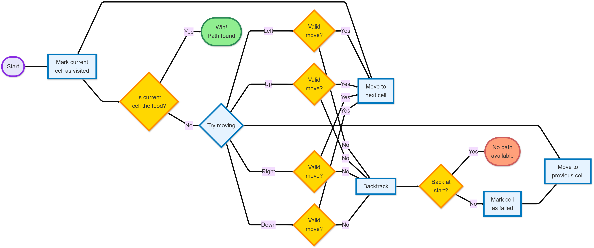

It can be implemented in Multiple ways. But we'll use:-
Backtracking is like trying different paths, and when you hit a dead end, you backtrack to the last choice and try a different route. In this article, we'll explore the basics of backtracking, how it works, and how it can help solve all sorts of challenging problems. It's like a method for finding the right way through a complex choices.
Backtracking is a problem-solving algorithmic technique that involves finding a solution incrementally by trying different options and undoing them if they lead to a dead end. It is commonly used in situations where you need to explore multiple possibilities to solve a problem, like searching for a path in a maze or solving puzzles like Sudoku. When a dead end is reached, the algorithm backtracks to the previous decision point and explores a different path until a solution is found or all possibilities have been exhausted.
The best way to implement backtracking is through recursion, and all backtracking code can be summarised as per the given Pseudocode:
void FIND_SOLUTIONS( parameters):
if (valid solution):
store the solution
Return
for (all choice):
if (valid choice):
APPLY (choice)
FIND_SOLUTIONS (parameters)
BACKTRACK (remove choice)
Return
Since backtracking algorithm is purely brute force therefore in terms of time complexity, it performs very poorly. Generally backtracking can be seen having below mentioned time complexities:
- Exponential (O(K^N))
- Factorial (O(N!))
These complexities are due to the fact that at each state we have multiple choices due to which the number of paths increases and sub-trees expand rapidly.
Backtracking in Maze Solving
Imagine you are helping a rat navigate through a maze to reach a piece of food. The rat starts at a specific point, and your job is to guide it by trying different directions. You don't know the path to the food in advance, so you have to explore all the possible ways the rat can move. This process is called backtracking.
How Backtracking Works:
1. Starting Point:
The rat begins at its starting position in the maze. From here, it needs to try moving in different directions (down, right, up, or left) to find the food.
2. Checking for Food:
At every step, the rat checks whether it has reached the food. If it finds the food, it stops, and the path to the food is marked as successful.
3. Moving in Different Directions:
If the rat doesn't find the food immediately, it tries to move in different directions, one by one:
- Move down: The rat first tries to go down.
- Move right: If it can't move down, it tries moving to the right.
- Move up: If it can't move down or right, it tries moving upward.
- Move left: Finally, if none of the previous directions worked, it tries moving to the left.
4. Valid Moves:
While moving, the rat can only step on spaces that are open (not walls) and hasn't been visited before. If the rat hits a wall or tries to move outside the maze, it knows it can’t go in that direction.
5. Marking Visited Spaces:
As the rat moves, it marks the spaces it has already visited, so it doesn’t try the same place again. These spaces might change colors to show the rat has explored them.
6. Finding the Food:
If the rat finds a way to reach the food, the path it took is marked as green (or a success color), and the game ends. The rat has successfully reached its goal!
7. Backtracking (Going Back):
If the rat gets stuck (meaning it has tried all possible directions but none lead to the food), it will backtrack. Backtracking means the rat returns to the previous position it came from, marking the place it got stuck in as red (a failure color).
The rat will continue trying different paths until it either finds the food or runs out of options.
8. No Path Available:
If the rat eventually returns to its starting position and there are no more directions to try, it concludes that there’s no way to reach the food, and the game will notify you that no path is available.
In Simple Terms:
Imagine you're guiding a rat in a maze where you don’t know the way out. You tell the rat to move in one direction, and if it can't continue, it comes back and tries another route. The rat keeps doing this until it finds the food or realizes there’s no way to reach it. The rat remembers where it has been, so it doesn’t get lost or go in circles. If it finds the food, the path is marked as successful; if not, it shows where it got stuck.
This process of trying, going back, and trying again is how backtracking works. It’s like a smart way of solving a puzzle where you explore every possibility but go back if things don’t work out.
Flow Expalaining BackTracking for Rat in a Maze
